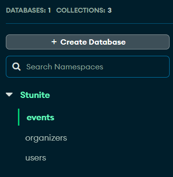
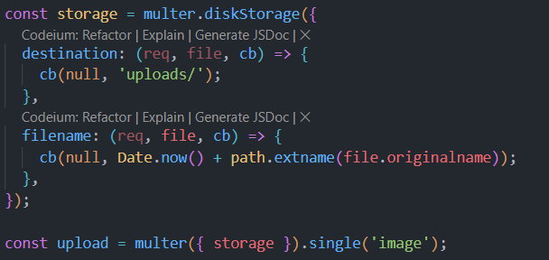
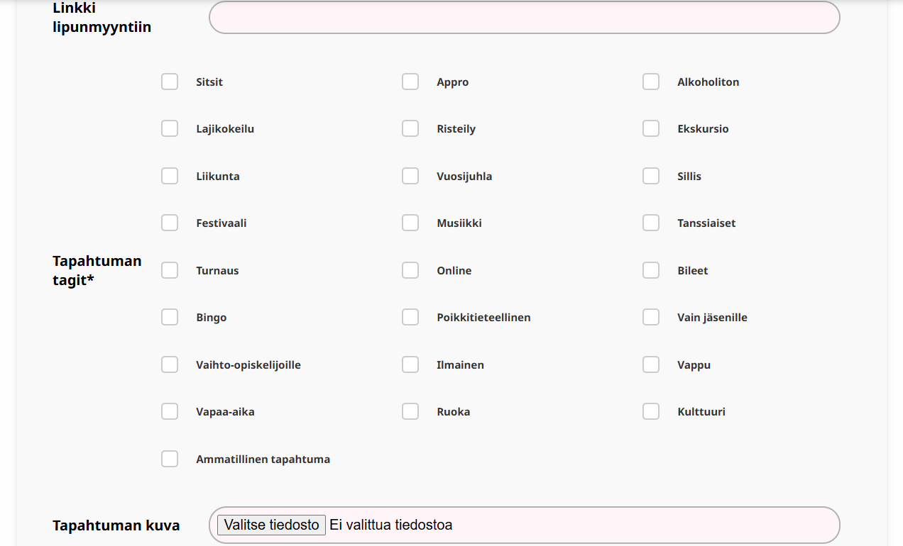
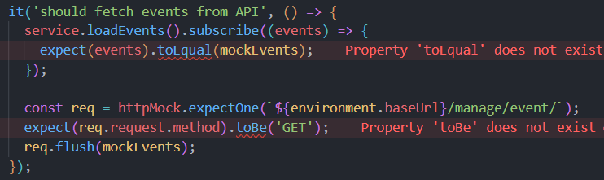

Olin Stunite projektissa vastuussa Backendistä sekä testaamisesta. Vastasin koko backendin rakentamisesta ja testaamispuolesta Inkan kanssa. Tavoitteena oli saada backend valmiiksi, hoitaa Vertin kanssa Aws yhdistäminen ja tämän jälkeen alkaisin testaamaan. Kuitenkin Aws yhdistäminen pitkittyi reilusti Aws Beanstalk ongelmien takia ja kun saimme sen toimimaan huomasimme ryhmänä että yksi frontend koodari oli tähän projektiin liian vähän. Siis testaaminen jäi siinä vaiheessa sivuun ja aloin auttamaan Inkaa frontendissä. Tämän takia testaaminen kärsi ja jäi aika viimetinkaan ja ehkä vähän vajaavaiseksi. Oppimistavoitteina oli oppia lisää backendistä sekä kuinka toimia backend koodarina ryhmässä.
Ennen ticorporatea, minulla oli projektin ideaan nähden hyvä osaaminen backendistä mutta halusin syventää sitä ja oppia toimimaan ryhmässä backend koodarina. Testaamisen suhteen oli perus tietoa kursseista mutta en ollut sen suhteen yhtään niin varma taidoistani. TC:n edetessä huomasin että onneksi olin käyny myös useamman fronttikurssin koska loppu tc:stä aika meni hyvin pitkälti frontin tekemiseen. Pilvipalveluiden suhteen olin peruskurssit käynyt joista oli jonkin verran apua mutta siitä opin myös paljon tc aikana.
Suunnittelin ja rakensin backendin kokonaan ja yhdistin sen mongo atlakseen. Suurimpina mainitsemisina backendistä oikeastaan jwt-token kirjautumisen yhteydessä ja multerin käyttö profiilikuvissa.
 Inkan kanssa hoidimme sitten backendin ja frontendin yhdistämisen. Siinä huomattiin että sen oisi voinut tehdä vielä aikaisemmin kun mitä tehtiin se koska aika paljon oli tehty eri muuttujien nimillä ja niitä sai sitten korjata vähän väliä.
Alussa pientä tahmeutta kun ei tiedetty mitä tiedostoja pitää laittaa elastic beanstalkille jotta se toimisi ja kun elastic beanstalkkiin oli tullut juuri uusi päivitys mutta se saatiin aika äkkiä korjattua dokumenttejä lukemalla ja Tenon avulla. Suurimmat ongelmat projektissa tulikin sitten kun koitimme saada yhteyden https. Nekin alkoivat sitten ratketa siitä kun aikamme tutkimme reittejä frontendistä ja tein enviroments kansion jossa oli molemmille omat reitit, locaalille ja tuotanto versiolle. Lopulta saatiin sekin toimimaan ja päästiin eteenpäin vaikka tämä näistä yksittäisitä projekteista vei reilusti eniten aikaa.
Frontendiä tein sitten kun olin saanut omat "pakolliset" hommat valmiiksi koska totesimme että yhdelle fronttikoodarille vähän liian kunnian himoinen projekti. Pääasiassa tein sivuja minkä osasin ja Inka teki tarvittavat toiminnallisuudet mitä en osannut tehdä. Tässä esimerkki eventin luomissivusta jonka tein aika pitkälti itse.
Testaamista tein vähän matkan varrella kun käyttäjä testasimme jamkin avoimien ovien päivänä sekä kävimme jamkon toimistolla Jaken kanssa testauttamassa sovellusta ihmisillä jotka järjestävät tapahtumia. Sen lisäksi tein frontendiin testejä jestillä. Oisin enemmän halunnut käyttää aikaa tähän mutta valitettavasti kaikkeen ei aika riittänyt.
Ps. en tiedä miksi se nyt yhtäkkiä heittää erroria noista ei ennen tullut ja testit toimii kuitenkin.
Projektin aikana opin paljon kuinka työskennellä ryhmässä tälläisessä projektissa joka on enemmän työelämän tyylinen. Olisin halunnut enemmän päästä keskittymään backendiin ja oppimaan uutta sen suhteen. Ryhmässä oli tarvetta muullekkin osaamiselle joten katsoin parhaaksi tehdä sitten vähän useampaa roolia koska siitä oli ryhmälle eniten hyötyä. Tässä tulee hyvin esiin näitä ryhmänä työskentelyn oppeja että aina projektin valmistumisen kannalta ei voi tehdä vaan sitä mitä haluiaisi ja mistä tykkää vaan joutuu katsomaan vähän että missä eniten tarvitaan auttavia käsiä. Testaamisen suhteen sama että oisin halunnut käyttää siihenkin enemmän aikaa mutta aika loppui vähän kesken. Toisaalta taas oli hyvä että tuli tehtyä vähän laajemmin niin pääsi käyttämään laajemmin kursseilta saamia oppeja ja oppimaan laajemmin lisää.
Haluaisin työskennellä tulevaisuudessa backendin parissa tai fullstack koodarina. Haluan hankkia enemmän osaamista backendin suhteen. Vahvuuksiani tällä hetkellä on backend koodaaminen sekä ryhmässä työskenteleminen.